Lecture Notes 04: Introduction to Variables with Integers
Objectives
By the end of this module, you will be able to:
- Create variable declarations.
- Assign values to variables by simple assignment, and print them out.
- Distinguish between integers in strings versus actual integers.
- Demonstrate ability to perform operations on integers
for a desired output.
- Simplify expressions with constants to single value.
- Evaluate expressions with variables in them.
- Convert English descriptions of operations into expressions.
- Mentally trace execution with expressions and calculations.
- Identify new syntactic elements related to the above.
And, once we've worked with integers, we'll also do some "number crunching".
Before Starting
- Read Sections 4.01 to 4.06 in the Codio Course
If you do not have your Codio course ready, use any text editor or simple IDE. Some possibilities are:
- Write using Sublime; Compile and run in the Terminal
- Use IDEs like: IntelliJ, DrJava, or JGrasp
Catching Up
Before we move forward, let's catch up (complete any remaining work from the previous module)
In this case, make sure we've got:
- Tracing
-
Debugging:
- Debug Prints
- Debugger (In Codio)
- Visualizer
- Clarify: What happens if we use the Run button for Compile & Run AND the Compile fails???
First, an analogy
Suppose we have boxes. Consider the following rules about "boxes":
- Each box can store only one item.
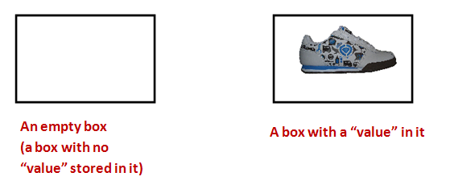
- The possible things that can be stored inside are
called values.
- Thus, at any given moment, a box's value is
whatever's inside it.
- Each box is "typed"
⇒
What this means:
- A box meant for shoes is allowed to store only shoes.
- A box meant for caps is allowed to store only caps.
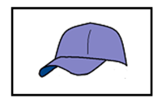
- Each box has a unique name:
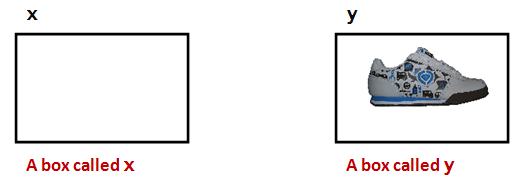
- There is a cloning process that works like
this:

- The value inside one box is cloned.
- The cloned value is placed inside another.
- There is a strange shortcut notation to specify cloning:
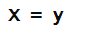
- Here, the = (equals sign)
does NOT mean "equals."
- It has been repurposed to mean
"clone", "copy," or, in programming-language
jargon, "assign".
- How to say it: "x is assigned the value in y".
- Important: Remember, a box can hold only one value at a time.
Activity 1:
Suppose
z is a box that stores caps. What
will the statement
z = y result in? Draw a picture.
Integer variables
Consider the following program:
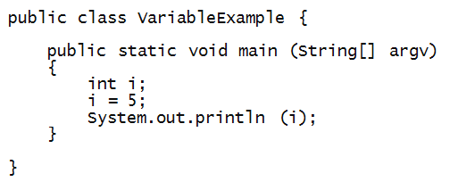
Activity 2:
Edit, compile and execute the above program.
What gets printed out to the terminal?
Now let's examine key parts of this program:
- First, i is the name of a "box" (of sorts).
- The term used for "box" is variable.
⇒ i is a variable.
- Variables must be "typed"
⇒ i can only store integers.
- To create and name a variable, we use a variable declaration:

- Here, int is a reserved word in Java.
- To put something in a variable, we use assignment
⇒ with the repurposed = (equals) sign.
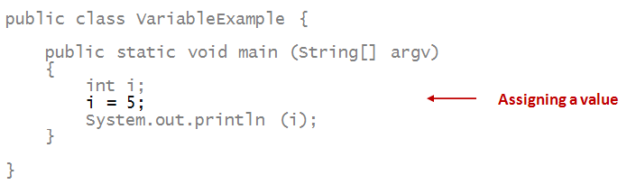
- When we print a variable, what gets printed is its value.
⇒ Thus, the number 5 gets printed
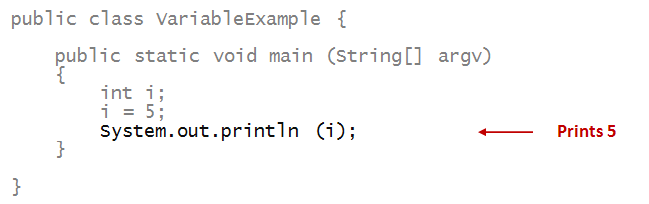
Next, let's look at assignment between variables:
- This is the analogue of cloning.
- Consider this addition to the above program:
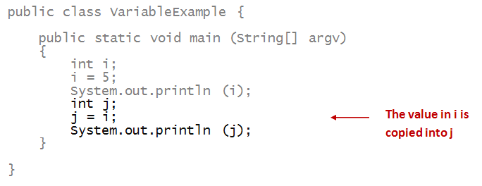
- We say, in short, "i is assigned to j".
Activity 3:
What happens if you don't place a value in a variable?
Find out by editing and compiling this program:
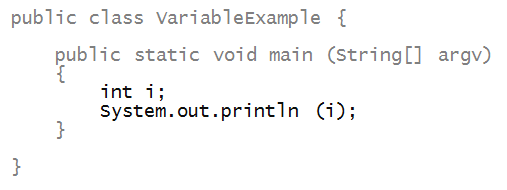
Activity 4:
Identify the output of this program just by reading
(mental execution).

Activity 5:
Identify the output of this program just by reading:

Then, write up the program to confirm.
A rule: a variable must be declared before it is
used (assigned a value or have a value copied from it).
Activity 6:
What is the compiler error you get for this program?

Variations
The following variations are worth knowing:
Note about writing style:
- A space on either side of the equals sign for assignment.
- The same when you combine declaration and assignment
for a single variable.
- It's customary to remove the space for multiple declarations.
- Example:

Activity 7:
Consider the following partially-complete program:

Write code where indicated to have the program first
print 6, then 5. You may not change any of the
existing code and you may not directly assign the numbers.
Instead, find a way to swap: that is, whatever is in
i
should go into
j
and whatever is in
j
should go into
i.
Integer operators
Unary Operators
First, let's consider some unary operators:
Activity 9:
Mentally execute the program below - what does it print?
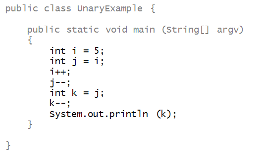
It is very important to know that a unary operator written like this:
num ++;
will increase the value of the variable num by 1 only AFTER it has been resolved and used in the expression it is in.
That means that a more complex operation, that involves the unary operators, might not result in what you expect.
Example:
Activity 10:
Mentally execute the program below - what does it print?
Binary Operators
Next, let's examine the familiar binary operators
+, -, *, /
- Addition: +
- Subtraction: -
- Multiplication: *
- Division: /
- Consider this example with addition:
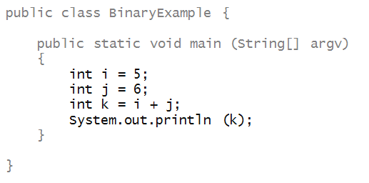
- What happens during execution:

- The values in i and j
are added.
- The resulting value goes into
variable k.
- A long-ish way of saying this aloud:
⇒
"k is assigned the sum of the values of
i and j"
- A shorter way:
⇒
"k is assigned i plus j"
- Here's an example with multiplication and division:
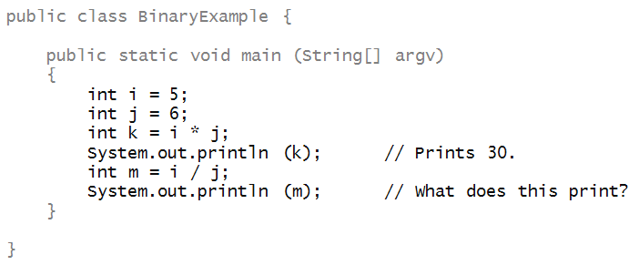
Activity 11:
Type up this program. What does it print? Change
i to 21.
What is the value of
m?
Integer division:
- In math, we learned that 1/4 = 0.25 and 21/6 = 3.5.
- In Java, however, the compiler sees that that only
integers are being used, and will perform integer division.
- That is, the result is rounded down to the
nearest integer.
- Thus, 1/4=0 and 21/6=3.
- Later, when we work with real numbers, we will see
that, to compute a real-valued expression, at least one
of the numbers needs to be real-valued.
- Example: 1.0/4.0=0.25 or 21.0/6=3.5.
- Integer division is useful when we want to do integer
arithmetic.
Expressions and operator-precedence
Consider the following program:

Activity 12:
Type up the above program in
MyExpressionExample.java
(renaming the class name to
MyExpressionExample).
What does it print?
About expressions:
- An expression combines constants (like 1, above), and
variables using operators.
- Example:
i*j - (i+1)*(j-1).
- The above expression is really equivalent to:
(i*j) - ((i+1) * (j-1)).
Here, we added some clarifying parentheses.
- Operator precedence allows us to reduce the
number of clarifying parentheses.
- Java precedence follows standard precedence in math:
/, *, +, -.
- You might remember the precedence via the acronyms
BODMAS or PEMDAS. (Look it up.)
- The above expression is NOT the same as:
i*j - i+1*j-1.
Activity 13:
What does the expression
i*j - i+1*j-1
evaluate to when
i=7 and
j=3?
More about expressions and assignment
Here are two more operators, one unary (negative sign)
and one binary (remainder or mod operator), that are commonly used:
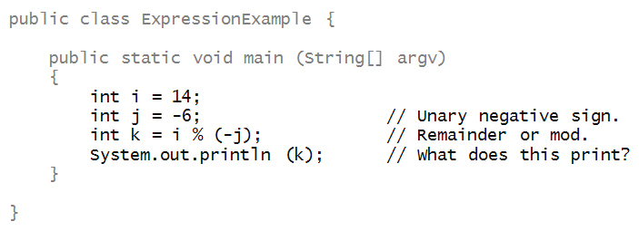
Activity 14:
What does it print?
One way to know whether one number cleanly divides another
is to apply the
% (remainder)
operator.
About the
%
operator:
- Examples of its meaning:
- In the above program we see that if j%i is 0 then i divides
j cleanly.
- The above program therefore identifies whether a
number smaller than 10 divides it cleanly.
- There is at least one, and therefore 10 is not prime.
Activity 15:
Write code in
MyExpressionExample3.java
to take the loop in 5.19 above and print the
quotient instead of remainder.
For example, the first three lines of the output should be:
10
5
3
(Thus, for example, when i is 1, the quotient is 10).
Now we'll look at a strange (initially) but very useful type of
assignment:
- Consider this program:

- Prior to evaluating the expression, i has value 7.
- On the right side, the current value of i is used
to evaluate the expression.
⇒ Thus, the expression evaluates to (7 + 7/2) = 10.
- This evaluated value then goes into variable i.
⇒ After the assignment, i has the value 10.
Choosing variable names
Thus far, for simplicity, we have used short one-letter names
for variables.
It is common to use longer, more meaningful names.
About variable names:
- They are a matter of taste.
- For programs with obvious mathematical connotation,
it's probably best not to use long names.
When things go wrong
As you might imagine, there are many ways to inadvertently
create errors.
Let's start by identifying compilers errors by reading carefully.
Activity 16:
Identify the compiler error:

Identify the compiler error:
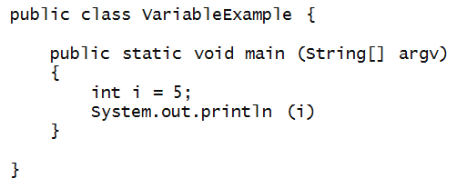
Identify the compiler error:
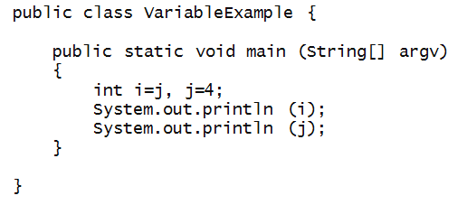
Identify the compiler error:
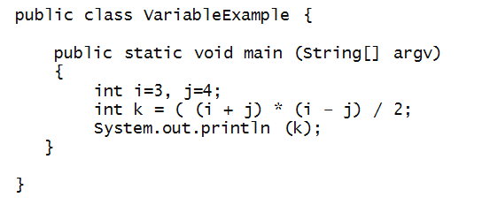
Meta
Another in our series of occasional "meta" sections that will
step back from the material to comment on how we can learn better.
This was a loooong module with lots of exercises and details.
Let's review:
- We introduced the all-important concept of a variable
along with the sense that there's a "place" in the computer
for each variable.
⇒
The "place" is really in the memory (also called RAM) of the computer.
- Along with variables is the notion of assignment,
which means "copying the value in one variable into another variable".
- Note: assignments are amongst the most common of statements
in everyday code.
- When a variable is of a numeric type like integers, we also
need to go over basic operators and show examples.
- Further complications arose when the operators have variations.
- Since we were on the topic of integers, we took this
opportunity to learn how to do some number-crunching.
So, if you felt a bit overwhelmed, that's perfectly understandable.
If you have to go back to some of the material to review or try
some exercises again, that's fine. You're going to get better at this!